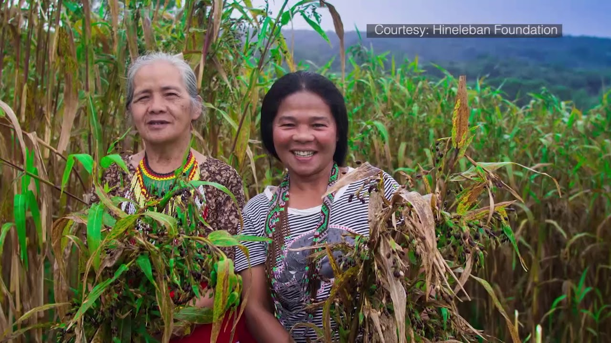

No one can counter the fact that our country is very rich in life. From the iconic Philippine Eagle and Tarsier, to the countless species of reptiles, amphibians, and birds, we are touted as a center of biodiversity. However, without evasive action, that title will slowly but surely disappear.
Deforestation in our country has large effects on biodiversity. Over 100,000 hectares of forest cover are said to be lost every year. Much of this is brought by illegal logging and is worsened by many of the government’s failed reforestation programs. The removal of these forests destroys habitats, causes soil erosion, and harms bodies of water at the same time. In turn, all of these contribute to endangerment and extinction of a multitude of species.

As with most problems, we can first help through knowledge. We must know more about what is going on right now, and then through this, we can play our own parts. One way of helping is by supporting organizations that help in reforestation, such as the Hineleban Foundation in Mindanao, which helps regrow indigenous forests. The important takeaway is that action is not just wanted, but gravely needed, and every small bit counts.